数字存内计算（DCiM）零基础精讲：一台“全可综合、零点量化、INT8×INT8”的存内计算加速器 A 147 TOPS/W, 250 TOPS/mm², Fully Synthesizable, Digital Compute-in-Memory Accelerator Supporting INT8×INT8 with Zero-Point Quantization in Intel 18A Technology（ISSCC 2026 · Paper 30.9）
AI 推理要反复做“权重 × 激活”的矩阵乘法，而传统芯片把数据在存储器和计算单元之间搬来搬去，大部分能量都浪费在搬运上。存内计算（Compute-in-Memory, CiM）把计算直接嵌进存储器里：权重“躺”在存储单元中，激活值广播进来，每一列一次完成一大串乘法累加（MAC）。
Intel 这篇工作，用100% 可综合的数字标准单元（连存储都是锁存器做的）在 Intel 18A 工艺上实现了一个 DCiM 加速器：128 输入通道 × 32 输出通道 × 2 组权重，支持带零点量化（Zero-Point Quantization）的 INT8×INT8 计算，实测最高 2.62 GHz、21.5 TOPS、面积效率 250 TOPS/mm²、能效 147 TOPS/W（400 mV 低压），最低可工作在 400 mV。
它的三个“独门绝技”是：① 用数学技巧把“零点量化导致的 9b×9b 乘法”无损变回“8b×8b 乘法”；② 把 Booth 编码器从“计算路径”搬到“权重写入路径”，编码一次、32 列共享；③ 用双缓冲 + 12T 可中断锁存器做权重存储，计算与更新权重零冲突。
- TOPS 是什么：Tera Operations Per Second，每秒万亿次运算。一次 INT8 的“乘加（MAC）”按 2 次运算（1 乘 + 1 加）计，所以 1 MAC = 2 OPS。这篇论文 21.5 TOPS = 每周期 4096 个 MAC × 2.62 GHz × 2 ops ≈ 21.5×10¹²。
- TOPS/W 是能效，TOPS/mm² 是面积效率：一个是“每瓦能算多少次”，一个是“每平方毫米能算多少次”。芯片行业既要比快，也要比省电、比面积小——AI 加速器论文基本都围绕这三个指标打架。
- 可综合 ≠ 性能低：你可能觉得“全标准单元 = 妥协 = 慢”。但请看数据：2.62 GHz、250 TOPS/mm²、与定制模拟 CiM 相比精度还确定——这说明当设计意图正确时，可综合数字路径可以同时拿到能效与面积效率。这正是本文最有说服力的地方。
§0.1学习路径：这篇教程怎么带你读
这篇文章虽短（3 页），但信息密度极高。如果你直接读原文，很容易被“零点量化”“Booth 编码”“12T 锁存”“双缓冲”这些词砸晕。本教程按下面的路径，从“为什么”讲到“怎么做”，每一章都配图、配动画、配视频：
| 章节 | 解决什么问题 | 配套素材 |
|---|---|---|
| 01 为什么需要存内计算 | 冯·诺依曼瓶颈是什么？CiM 凭什么省电？ | 图 d01、d02 |
| 02 数字 CiM 与“可综合” | 模拟 vs 数字 CiM 怎么选？“可综合”到底指什么？ | 图 d02、d03 |
| 03 零点量化基础 | 量化是什么？零点（非对称）量化为什么精度更好？ | 图 d04、仿真 A |
| 04 核心数学：零点量化分解 | 9b×9b 问题怎么变成 8b×8b？三个修正项怎么“白嫖”？ | 图 d05、数值验证、仿真 C |
| 05 Booth 编码的艺术 | 部分积为什么能减半？编码权重还是编码激活？ | 图 d08、视频 v01、仿真 B |
| 06 存储与双缓冲 | 12T 锁存器怎么存储？双缓冲怎么做到零停顿？ | 图 d09、d10、视频 v03 |
| 07 系统架构与数据流 | 128×32×2 的加速器长什么样？数据怎么流动？ | 图 d06、d07、d11、视频 v02、仿真 D |
| 08 面积功耗与实测 | 面积/功耗花在哪？实测数字怎么读？ | 图 c01–c04、原文图 |
| 09 自测 · 未来方向 | 检验学习效果，讨论还能怎么继续做研究 | 思考题 12 道、术语表 |
§0.2摘要逐句精读（含背景补全）
我们把论文摘要拆成 6 句，逐句翻译 + 解释，其中括号里是本教程补的背景知识：
| 原文（摘录） | 人话解释 |
|---|---|
| “Digital CiM provides deterministic accuracy, with process and voltage scalability along with immunity to parametric variation” | 数字 CiM 的每个加法都是逐位精确的，不受工艺波动（PVT）影响，结果可复现（deterministic）；并且能跟着工艺节点、电源电压一起缩放（低压也能跑）。（对比：模拟 CiM 的电流/电荷求和是模拟量，有噪声和 ADC 误差。） |
| “a fully synthesizable design enables portability across technology nodes… using standard design tools and cell libraries” | 全可综合意味着用 Verilog 描述 + 标准单元库 + 综合/布局布线工具就能做出来；换工艺节点只需换库重新综合（见 §2.2 图 d03）。 |
| “128 input channels, 32 output channels, 2 weight sets” | 加速器规模：一次处理 128 个输入通道（如 128 个输入特征图），产生 32 个输出通道；权重准备了两份（双缓冲，见 §6.3）。 |
| “high-density multibit interruptible 12T-latch-based memory storage” | 权重存储用的是“可中断的 12 管多比特锁存器”标准单元，而不是定制 SRAM 宏——这是“全可综合”的关键（见 §6.1、§6.2）。 |
| “radix-4 stationary weight encoded Booth computation, a unique unsigned-to-signed mapping scheme, and support for zero-point-quantized INT8×INT8” | 乘法用 Radix-4 Booth 编码，而且编码对象是“静止不动的权重”（stationary weight）而不是广播的激活；配合一套无符号→有符号映射技巧，支持带零点的 INT8×INT8（见 §4、§5）。 |
| “2.62 GHz … 0.0856 mm² … 250 TOPS/mm² … 21.5 TOPS … 147 TOPS/W at 400 mV … 254 TOPS/W at 10% input activity” | 实测成绩：1.1 V 下 2.62 GHz、21.5 TOPS；低压 400 mV 下能效 147 TOPS/W（输入活动率 25%），更低活动率 10% 时能效升到 254 TOPS/W（见 §8.2）。 |
§0.3论文的 6 条贡献（TL;DR 清单）
一篇 ISSCC 论文的贡献通常会在摘要里逐条列出。本文摘要明确给出了 6 条，我们在教程里逐条展开，你可以先记住这 6 条，读完全文再回来看：
- 峰值面积效率 250 TOPS/mm²、吞吐 21.5 TOPS（1.1 V、25°C、2.62 GHz）；
- 400 mV 低压鲁棒运行，峰值能效 147 TOPS/W（25% 输入活动率、6.1 mW）；
- 能效随活动率可扩展到 254 TOPS/W（10% 活动率、3.5 mW、400 mV）；
- 无符号→有符号映射 + 零点扩展预计算：省 20% 功耗、17% 面积（摘要数字；正文为功耗 17%、面积 21%，见 §4.3 说明）（见 §4）；
- 静止权重 Booth 编码：计算功耗降低 28%（见 §5）；
- 高密度多比特锁存位单元：权重存储面积降低 20%（见 §6.2）。
如果你是完全零基础：按顺序读 01→09，中间每个交互仿真都玩一下、每个视频都看一遍，预计需要 60–90 分钟。如果你已经懂 CIM 基本概念：直接跳到 §4（核心数学）和 §7（架构数据流），这两章是本文最精彩的部分。所有公式都用“具体数字例子”验证过，你可以拿起计算器自己算一遍。
§1背景：为什么需要存内计算？
要理解这篇论文，第一件事是理解它要解决的“大问题”。让我们从一个非常朴素的问题开始：为什么现在的 AI 芯片这么缺带宽、这么费电？
1.1 冯·诺依曼瓶颈（Von Neumann Bottleneck）与存储墙（Memory Wall）
绝大多数计算机都遵循冯·诺依曼架构：存储器（Memory）和运算器（Arithmetic Unit）分开，数据通过总线来回搬运。CPU 从内存取指令、取数据，算完再把结果写回内存。这个结构在通用计算里简单高效，但对 AI 推理来说有个致命问题——
粗略数量级（业界常引用的数字）：一次 8bit 乘法+累加（MAC）约消耗 1 pJ，而一次 DRAM 访问约消耗 200 pJ（还要加上几十纳秒的延迟）。也就是说，只要权重不是“常驻计算单元旁边”，那么每做一次乘法，搬运数据消耗的能量就是计算本身的几百倍。AI 推理是“权重海量、反复重用”的负载，这个搬运成本被放得极大——很多研究表明推理任务中 60%~90% 的能量和延迟都花在数据搬运上，这就是所谓的“存储墙”（Memory Wall）。
更糟的是，这个差距还在扩大：AI 模型的算力需求（FLOPs）增长远快于 DRAM 带宽的增长，两者之间的“剪刀差”越来越大，业界称之为“带宽墙”。于是硬件研究者想：能不能不让数据搬来搬去，而是把计算搬到数据所在的地方？这就引出了两条路线：
- 近存计算（Near-Memory Computing, NMC）：把计算单元放到存储器旁边（比如 3D 堆叠），缩短搬运距离，但数据还是要经过接口进出；（本论文集里 08 号论文就是 Process-Near-Memory 的例子）
- 存内计算（Compute-in-Memory, CiM）：把计算直接嵌进存储阵列里——权重存在哪，就在哪算。这是本论文的路线。
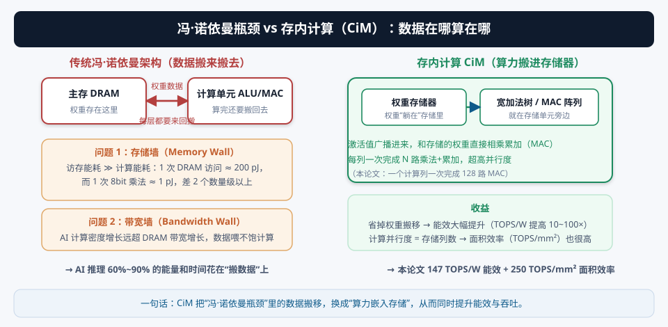
1.2 CiM 的基本思想：一次“列运算”代替无数次“读—算—写回”
神经网络的核心运算是矩阵乘法 / 卷积，而矩阵乘法归根结底是一堆点积（dot product）：输出 yj = Σi ai·wj,i。在 CiM 里，这个求和被“并行地”完成：
- 权重静止存放：把权重 wj,0, wj,1, …, wj,N-1 提前写入一列存储单元，它们“躺”在那里不动；
- 激活广播：把激活值 a0, a1, …, aN-1 通过字线/总线广播到这一列的所有单元；
- 列内并行乘加：每个单元完成自己的乘法，然后在列的底部用一条“宽加法树”（wide adder tree）把 N 个乘积累加成一个结果——一个周期完成 N 路 MAC。
传统芯片的并行度来自“复制计算单元”；而 CiM 的并行度来自“存储阵列的每一列天然就是一条并行计算流水线”。只要把列做宽（本论文一列 128 路 MAC）、把列做多（32 列），就能用很小的面积拿到巨大的并行度——这正是它面积效率高的根本原因。代价是：权重必须“写死”在存储里，所以 CiM 最适合权重固定（或低频更新）的推理场景，而不是频繁训练的场景。
本论文就是沿着这条路线：把“列”做成 128 路 MAC 的“计算列”，一共 32 列（对应 32 个输出通道），每周期完成 32×128 = 4096 个 MAC。剩下的问题全是工程细节：怎么存（12T 锁存）、怎么乘（Booth）、怎么处理量化（零点映射）、怎么不卡顿（双缓冲）——这就是后面每一章的由来。
如果 CiM 这么好，为什么以前没这么做？提示：① 模拟 CiM 的精度问题；② 权重更新不方便；③ 可综合性与工艺移植性；④ 与现有 SoC/CPU 的集成。带着这些问题读下一章。
§2数字 CiM（DCiM）与“全可综合”：本论文的技术路线选择
2.1 模拟 CiM vs 数字 CiM：一个决定性的选择
CiM 内部怎么“算”，业界分成两大流派：
模拟 CiM（Analog CiM）：让存储单元直接参与模拟运算——比如把权重编码成单元的电导/阈值电压，把激活编码成字线电压或位线电流，电流在位线上“自然累加”（基尔霍夫电流定律），最后在列尾用一个 ADC 把模拟结果转回数字。它的优点是：单元面积最小、功耗可以极低、部分积“免费”。但缺点是致命的：
- 精度不确定：电流求和是模拟量，受噪声、失调、温度影响；ADC 本身还有量化误差。同一个网络在不同芯片（甚至同一芯片不同温度）上结果不同——这对需要“确定性精度”的推理系统是灾难；
- 工艺缩放困难：模拟精度对工艺波动（PVT variation）极敏感，跟着工艺节点缩放时信噪比恶化；
- 难以移植：模拟电路几乎全是定制版图，换个工艺节点就要重新设计、重新验证。
数字 CiM（Digital CiM, DCiM）：存储单元只负责“存”数字 0/1（可以是最普通的锁存器/触发器/SRAM 位单元），读出后交给旁边的数字逻辑（乘法器、加法树）做精确运算。它的优点正好补上模拟的短板：逐位精确、可复现；低压可运行；100% 标准数字设计流程。代价是：单元面积比纯模拟大、每个乘法都要显式做（没有“免费的部分积”）。
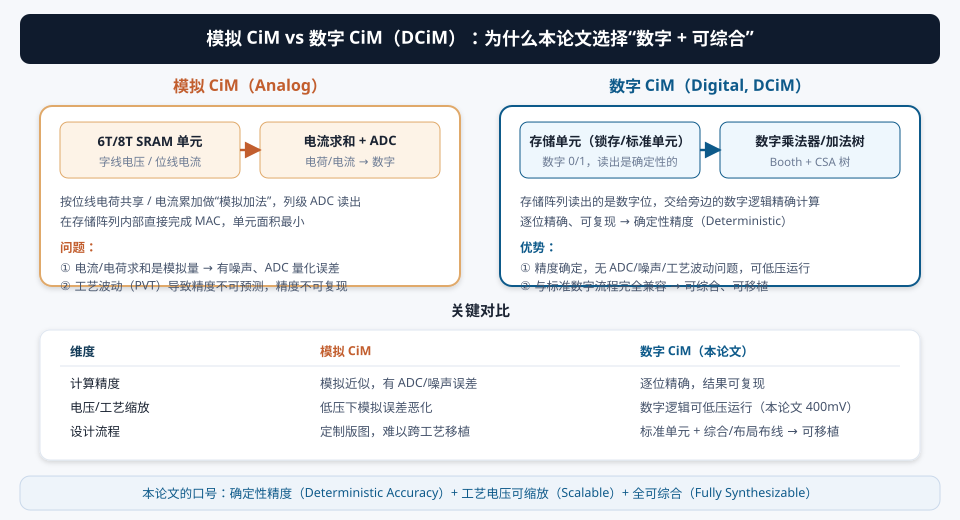
因为它是纯数字的：每一个加法都是布尔逻辑的确定结果，与电压高低、工艺角无关（只要满足时序）。所以它敢把电压一路压到 400 mV（1.1 V 的 1/3 都不到）来换能效——这在模拟 CiM 上几乎不可想象（400 mV 下模拟精度早就崩了）。这是“数字”给它的最大红利。
2.2 “全可综合”（Fully Synthesizable）到底意味着什么？
芯片设计有两种典型流程：
- 全定制/半定制（Full-Custom / Semi-Custom）：画原理图、手动画版图、做 DRC/LVS 验证。存储宏（SRAM/Register File）通常是定制 IP。模拟 CiM 基本属于这一类。
- 可综合流程（Synthesizable RTL Flow）：用 Verilog/VHDL 描述功能 → 逻辑综合（工具自动映射到标准单元库）→ 布局布线（APR） → 签核（时序/功耗/DRC 检查）→ 出 GDSII 流片。整个流程工具化、自动化。
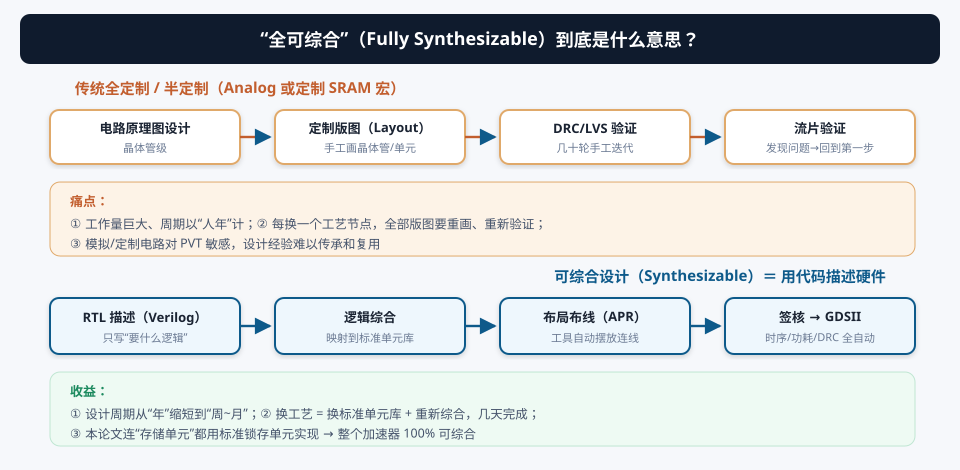
本论文标题里的 “Fully Synthesizable”（全可综合） 有三个层次的含义，缺一不可：
- 计算逻辑可综合：Booth 选择器、CSA 加法树、流水线寄存器——这些本来就是标准数字逻辑，没什么稀奇；
- 存储也可综合：这是最关键的！权重存储不用定制 SRAM 宏，而是用标准单元库里的锁存器（Latch）拼出来的（12T 多比特锁存，见 §6）。锁存器是标准单元库的成员，所以“存储”也是综合工具能处理的对象——整个加速器没有一个定制 IP；
- 整个加速器作为一个宏（on-die accelerator）可综合：可以像普通 RTL 一样被嵌入 SoC，用标准工具链完成物理实现。
可综合意味着：① 换工艺节点（比如 18A → 下一个节点）只需换标准单元库、重新综合布局布线，几周搞定，而不是重新画版图；② 设计周期短，适合快速迭代验证新架构；③ 可以直接集成进 Intel 的 SoC 设计流程，降低采用门槛。论文摘要里那句 “promoting broader adoption”（促进更广泛采用）说的就是这个。当然代价也有：锁存器存储的面积/密度不如定制 SRAM，所以论文才要在“高密度多比特锁存”上花功夫（§6.2）。
有人会觉得“用标准单元做存储、做计算”是妥协，性能肯定不如定制。但本文用结果说话：2.62 GHz、250 TOPS/mm²、147 TOPS/W，在能效和面积效率上对标甚至超过很多定制模拟 CiM。可综合路线真正牺牲的是“存储密度”（锁存器比 6T SRAM 大），而不是速度或能效——因为数字计算的功耗主要由“翻转活动率”决定，与是否定制无关。这其实是本文最重要的产业启示。
§3量化基础：为什么有“零点量化”这种东西？
3.1 为什么 AI 硬件离不开量化
神经网络训练时用 32 位浮点（FP32），但推理部署时几乎都会量化（Quantization）到 8 位甚至更低。原因非常实际：
- 面积与功耗：INT8 乘法器面积/功耗约为 FP32 的 1/10 量级；INT4/INT2 更低；
- 带宽与访存：权重从 FP32 压到 INT8，访存量直接除以 4，而访存是 AI 推理最大的能耗与延迟来源；
- 速度：位宽越低，同面积下能塞下的计算单元越多。
量化的基本公式（以 8bit 为例）：把真实值 r 映射到整数 q。有两种主流方案——对称与非对称（零点）量化。
3.2 对称量化 vs 零点（非对称）量化
两者都是“线性映射”，区别在于零点 z 是否必须为 0：
- 对称量化把真实值域强制对称地映射到 [−128, 127]，零点对应 0。但如果数据本身是偏态的——比如 ReLU 后的激活值全是正的（0 到某个正值），对称量化会浪费一半的整数区间（负数区），导致有效分辨率减半；
- 零点量化让 z 可以落在任意整数位置，把整个 [0,255] 区间都用来表示实际数据范围。数据越偏态，零点量化的精度优势越大。
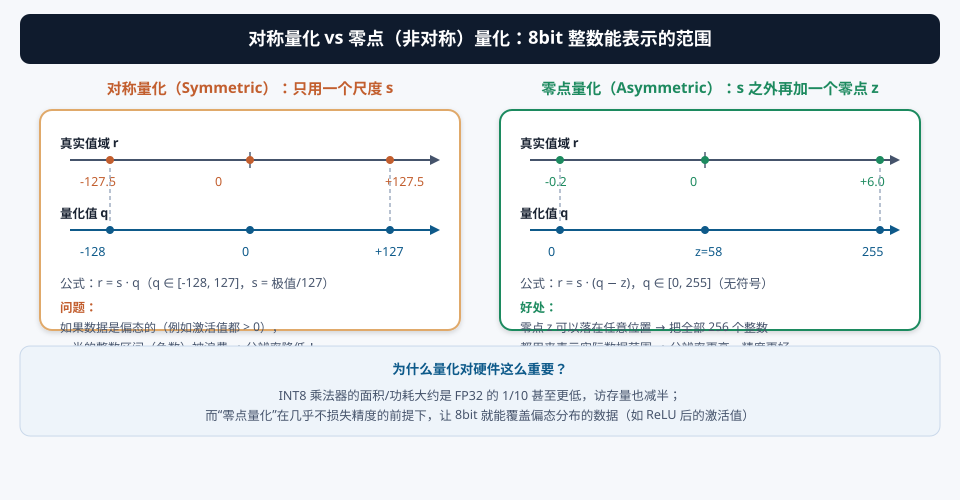
无论对称还是非对称，8bit 都只有 256 个码字。谁用得更“紧”，谁的量化步长（分辨率）就小、误差就小。对称量化在偏态数据上实际只用了 ~128 个码字，等于“7bit 精度”；零点量化把 256 个码字全部用到实际区间上，是真正的“8bit 精度”。这就是论文说 “Zero-point quantization improves computation accuracy”（零点量化提升精度）的原因。
3.3 交互演示 A：亲手把一组偏态数据量化成 INT8
注意式 3.2 里那个 “− z”：反量化时要把整数先减掉零点再乘尺度。这个“减零点”看起来只是数学上的一小步，却会在硬件里引发一个大麻烦——这正是下一章的核心冲突。先记住两个记号，后面反复用：
- Az、Wz：零点量化后的激活/权重（8b 无符号，0~255）；
- As、Ws：映射为有符号后的激活/权重（8b 有符号，−128~127）。
§4核心数学：把“零点量化”的代价从 9b×9b 压回 8b×8b
这一章回答论文里最反直觉的一个问题：明明输入是 8bit 整数，为什么“零点量化”会逼你去做 9bit 乘法？而 Intel 又是怎么用一条数学恒等式把它无损变回 8bit 乘法的？读完这一章，你就真正理解了这篇论文的灵魂。
4.1 冲突：零点量化后的“无符号 8b”必须当成“有符号 9b”来乘
先看硬件想做什么。DCiM 每周期要算的是一条点积：
如果 Az、Wz 直接按无符号数相乘，部分积要做 5 组（Radix-4 Booth 对无符号数需要额外的符号处理组），每个部分积还更宽。而更麻烦的是，神经网络要的并不是式 4.1 本身，而是“减掉零点后”的结果。真实的输出是：
（把 r = s(q − z) 代进 y = ΣrA·rW 展开即可得到。）其中 zA、zW 是激活和权重的零点。式 4.2 的意思是：芯片只需要算式 4.1 的整数点积，再在外围做一次性的减零点和缩放修正——这是量化推理的标准做法，没问题。
真正的问题出现在“想直接在乘法器里做修正”的时候：如果每个乘法都想“先减零点再相乘”，Az − zA 的取值范围是 [−zA, 255−zA]。当 zA 比较小（例如 10）时，范围是 [−10, 245]——超出 8b 有符号（−128~127）的表示能力，必须用 9b 有符号数（9b 有符号范围 −256~255）。于是朴素实现会退化成：
- Radix-4 Booth 下，8b 有符号乘法生成 4 个部分积；9b 有符号乘法生成 5 个部分积——多一整棵部分积加法树；
- 每个部分积宽度从 9b 增到 10b——加法树整体加宽；
- 面积、功耗、延迟全部上升。论文给出量化数字：这直接导致面积 +21%、功耗 +17%（即反过来，避免它省下 21% 面积、17% 功耗）。
4.2 绝招第一步：无符号 → 有符号的“免费”映射（MSB 取反）
Intel 的办法是不按式 4.3 做，而是先用一条恒等式把无符号 8b 变成有符号 8b：
As ∈ [−128, 127]，正好是 8b 有符号数的完整范围。而减 128 在二进制里有一个惊人的便宜实现：把最高位（MSB）取反（翻转）即可。验证一下：
| Az（无符号） | 二进制 | MSB 取反后 | 解释为有符号 As |
|---|---|---|---|
| 200 | 1100 1000 | 0100 1000 | +72 = 200−128 ✓ |
| 50 | 0011 0010 | 1011 0010 | −78 = 50−128 ✓ |
| 0 | 0000 0000 | 1000 0000 | −128 = 0−128 ✓ |
| 255 | 1111 1111 | 0111 1111 | +127 = 255−128 ✓ |
原理：8bit 无符号数加/减 128，等价于翻转最高位——因为第 7 位代表 128 的权重。这个映射不花一个加法器，每个激活只需一个异或门（XOR）按格式控制翻转。论文原话 “conditionally inverting the MSB based on input format” 说的就是它。
4.3 绝招第二步：零点扩展（Zero-Point Expansion）——三个修正项全“白嫖”
映射完之后，Az = As + 128。但论文要处理的不只是 128 这个偏置，还有零点 zA、zW。于是把偏置和零点打包成两个常数：
（注意常数的配对：激活侧常数 CA 里含权重的零点 ZW，权重侧常数 CW 里含激活的零点 ZA。这个配对方式在下一步展开时会让修正项的成本分配最合理。）
现在把式 4.1 的乘积展开：
展开后得到四个项，其中后三项就是“零点扩展”的代价。关键洞察在于——在 DCiM 的数据流里，这三项都便宜得几乎免费：
| 项 | 含义 | 为什么便宜 |
|---|---|---|
| ① Σ AsWs | 主项：8b×8b 有符号点积 | 就是乘法阵列本来的活，4 个部分积、9b 宽——这就是我们想要的全部计算 |
| ② CW·ΣAs | 常数 × 激活和 | 激活是广播共享的：32 个计算列用的是同一份激活！ΣAs 每周期算一次，32 列共享，摊薄到几乎为零 |
| ③ CA·ΣWs | 常数 × 权重和 | 权重是静止的：ΣWs 在写权重时就预计算好、直接存进存储器，计算期间一分电都不花 |
| ④ N·CACW | 固定常数 | N 固定时就是常数，加一次即可 |
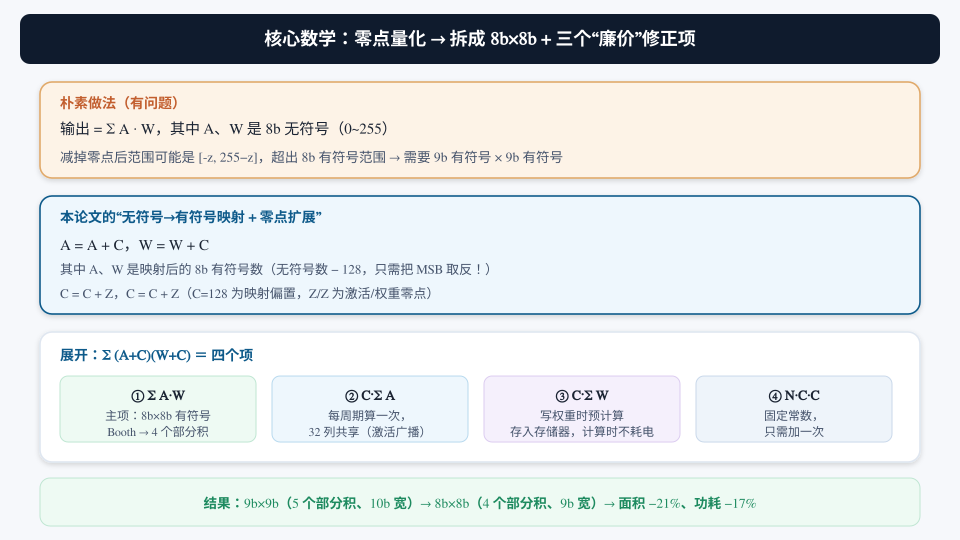
朴素做法是在每个乘法内部做零点修正（→ 9b×9b，贵）；Intel 把修正挪到整条点积求和之后，利用“激活共享 + 权重静止”这两个数据流特性，把修正的代价从“每个乘法一次”摊薄成“每条点积一次，而且大部分预先算好”。这是典型的算法-架构协同设计（algorithm-architecture co-design）——同样的数学，放在不同的数据流里，成本完全不同。
论文给的收益：部分积宽度 −10%、部分积数量 5→4（少一棵加法树），总体 DCiM 功耗 −17%、面积 −21%。
细心对比会发现：论文摘要里这项技术写的是 “saving 20% power / 17% area”，而正文（Fig. 30.9.3 附近）写的是 “lowers overall DCiM power by 17% and area by 21%”。两个口径（20%/17% vs 17%/21%）对不上——这是论文自身的一个笔误或口径差异。读论文时不要盲信任何单一数字，要交叉核对摘要与正文；写自己的论文时，这类不一致正是审稿人最容易抓的问题。本教程正文沿用“功耗 −17%、面积 −21%”，并在 §0.3 标注了摘要口径。
4.4 数值验证：亲手算一遍（强烈建议跟着算）
空谈不如验算。取 N=4，两组零点量化数据（无符号 8b）：
第一步：直接算（基准答案）。
Y = 200×150 + 50×200 + 255×60 + 10×180
= 30000 + 10000 + 15300 + 1800 = 57100
第二步：映射成有符号（每个数 MSB 取反，即减 128）。
As = [72, −78, 127, −118]， Ws = [22, 72, −68, 52]
第三步：按式 4.6 分四项计算（这里是零零点、C=128 的特例）。
① Σ AsWs = 72×22 + (−78)×72 + 127×(−68) + (−118)×52
= 1584 − 5616 − 8636 − 6136 = −18804
② CW·ΣAs = 128 × (72 − 78 + 127 − 118) = 128 × 3 = 384
③ CA·ΣWs = 128 × (22 + 72 − 68 + 52) = 128 × 78 = 9984
④ N·CACW = 4 × 128 × 128 = 65536
合计：−18804 + 384 + 9984 + 65536 = 57100 ✓ 与直接算完全一致！
注意第 ② 项里我们只需要 ΣAs（激活和，每周期一次、32 列共享），第 ③ 项只需要 ΣWs（权重和，写权重时预存），第 ④ 项是常数——没有任何一项需要 9bit 乘法。这就是论文说的 “intrinsic zero-point compute with unsigned-signed mapping within the DCiM dataflow”。
① 如果 Az 本来就有符号（比如已经是 −128~127 的 INT8 对称量化数据），还需要 MSB 取反这一步吗？（提示：看格式控制位怎么设置。）② 式 4.6 的后三项会不会带来额外位宽？ΣAs 是 128 个 8b 数求和，需要多少位才不会溢出？（提示：128 × 127 ≈ 2¹⁴，所以累加器至少 15~16 bit——这是所有 MAC 阵列都要处理的“累加器宽度”问题。）③ 为什么论文把 ZW 配到激活侧常数 CA 里而不是 CW？交换配对会影响功耗吗？
§5Booth 编码的艺术：乘法怎么做得又小又省电
5.1 部分积减半：Radix-4 Booth 的原理
二进制乘法的基础是“移位相加”：N 位乘数产生 N 个部分积（partial product），全部对齐相加。8b×8b 就有 8 个部分积——加法树又大又费电。Booth 编码用一个数学技巧把部分积数量减半：
把乘数每 2 位一组（相邻组重叠 1 位，即每 3 位看一组），每组决定“被乘数 × {−2, −1, 0, +1, +2}”，于是 8b 乘数只需 4 个部分积（9b 乘数要 5 个）。例如乘数 Y=42（00101010₂）按 Radix-4 分组：
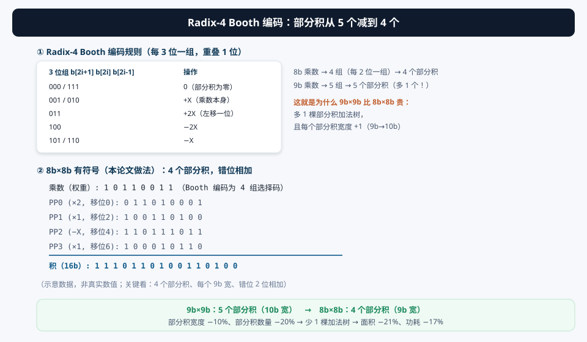
直觉：2 的幂之和可以“借位”改写。例如乘 7 = 8 − 1，本来要加三个 1 的位（0111），写成“+8 再 −1”只需要两步。Booth 编码的每组 3 位就是在乘数的二进制里寻找这种“借位改写”的机会，把相邻位合并。数学上：部分积数量 = ⌈乘数位宽/2⌉，8b→4 个、9b→5 个。
5.2 关键决策：编码“静止的权重”，而不是“广播的激活”
Radix-4 Booth 要求乘数之一先被编码成“选择码”（每组 3 位 → 输出 ±1/±2/0 的选择信号，通常 3 根信号，8b 乘数共 4×3=12 根）。在 DCiM 里，每个乘法有两个输入：广播的激活和静止的权重。编码谁？论文给了两种方案的成本分析：
| 方案 | 做法 | 优点 | 致命缺点 |
|---|---|---|---|
| 编码激活 （activate-side） | 在外围把 8b 激活编码成 12b 选择码，广播给 32 列 | 编码器只做一个，32 列共享，面积摊薄 | 广播总线每周期翻转的位数从 8 变成 12（多 50%！），计算功耗上升——因为广播总线是每周期都在翻的“热”信号 |
| 编码权重 （weight-side，本文） | 把 8b 权重预先编码成 12b 选择码，存进权重存储器；计算时直接读选择码 | ① 编码发生在写权重路径上：权重写入频率远低于计算频率，编码器吞吐要求低 → 面积可缩小 32×；② 计算期间编码器完全不工作，零编码功耗；③ 选择码存入锁存器后，每个周期不动，不会贡献翻转功耗 | 存储位宽从 8b 变 12b → 权重存储面积 +50%（但用高密度锁存 + 双缓冲弥补，见 §6） |
CMOS 动态功耗 ∝ 电容 × 电压² × 翻转活动率。广播总线每周期都在翻（活动率高），而权重存储几乎不动（活动率低）。所以把“昂贵的编码”从高活动率的广播路径挪到低活动率的存储路径，就是把功耗从“每周期都付”变成“写一次付一次”。论文数字：权重侧编码相比激活侧编码，面积只多 7%，计算功耗却低 28%。
还有一个隐藏收益：激活的 MSB（高位）通常翻转较少（有符号数据高位变化慢），权重侧编码后，进加法树的部分积由激活的低活动率位决定，进一步压低加法树翻转。
5.3 修正 Booth 编码（single/neg/pos）与 S 位预计算
（a）修正选择信号。标准 Radix-4 Booth 选择器用 single/double/neg 三根信号（single=1×，double=2×，neg=取负）。本论文改成 single/neg/pos：
- 用 pos（正）替代 double（2×），把“2×”信息隐含在别的编码里（如把 +2X 编成 pos 与 single 的组合）；
- ±0 的编码：让 neg 与 pos 同时为 0（表示 +0）或同时为 1（表示 −0），选择器对两种 0 输出相同的全零部分积——于是选择器电路里可以省掉“判别 0”的逻辑；
- 结果：Booth 选择器面积最多降低 12%。
（b）S 位（Sign bit）预计算。部分积可能是负的（−X、−2X）。在二进制补码里，“负部分积”需要一个符号处理：对部分积取反加 1（或加符号修正位）。这个“符号修正”通常要在加法树入口实时生成。论文的招数是：S 位只由乘数（权重）决定，与激活无关——所以把每个部分积的 S 位在写权重时就算好、和选择码一起存进权重存储器，计算时直接取用。这样加法树入口不再需要生成 S 位的逻辑，又省一块面积和功耗。
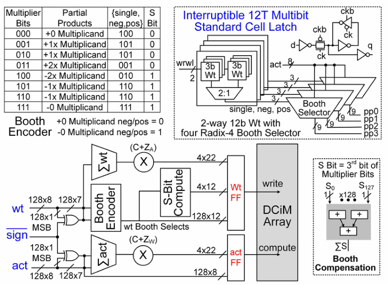
① 为什么“S 位只由权重决定”？提示：部分积 = 操作(±X 或 ±2X)，操作由哪组 3 位决定？X 是谁？② 修正 Booth 把 ±0 的 neg/pos 同时置 1，选择器输出什么？为什么两种 0 能共用输出？③ 如果改成编码激活，S 位还能预计算吗？
§6存储与双缓冲：权重“躺”在哪里，以及怎么换
6.1 可中断 12T 锁存器（Interruptible 12T Latch）
权重存储是 DCiM 的“地基”。本文没用定制 SRAM 宏，而是用标准单元库里的锁存器实现——这是“全可综合”成立的前提（§2.2）。一个锁存器本质上是两个交叉耦合的反相器（互相锁住对方的输出），标准实现约 12 个晶体管（6T SRAM 的一半都不到的关系——SRAM 6T，锁存 12T，锁存更“贵”但完全可综合）。
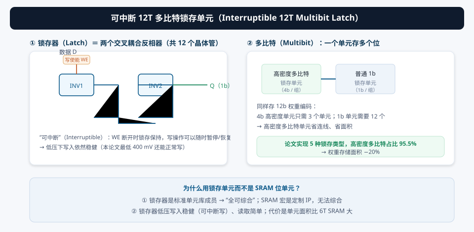
“可中断”（Interruptible）是什么意思？意思是写入操作可以由写使能（WE）控制随时暂停/恢复：WE 断开时锁存器保持原值不受数据线干扰。这对 DCiM 有两个直接好处：
- 低压写入稳健：400 mV 下写 SRAM 位单元很容易失败（写入裕度不足），但锁存器的写是“显式数据驱动 + 使能控制”的，低压下依然可靠——论文强调 “robust low supply voltage write operation”；
- 写入与计算互不干扰：一组权重写一半停下来去处理别的事，数据不会丢、计算不会错。
6.2 多比特高密度（Multibit / High-Density）与“5 种锁存类型”
锁存器比 SRAM 位单元大，论文就想法子“省面积”：
- 多比特（Multibit）：把多个位（论文提到 4b 级别）打包进一个共享单元体（共享电源/地/控制线），位间连线复用，密度大幅提升；
- 5 种锁存类型混用：从单比特到高密度多比特，按“需要的位宽”和“时序约束”选用最省面积的类型；
- 综合工具按 compute-after-write 两周期时序约束（写入后隔一拍再读）做优化，最终高密度多比特锁存的插入比例高达 95.5%；
- 净收益：权重存储面积降低 20%。
一个 1b 锁存单元有自己的反相器对、控制电路和布线。如果 4 个位共享同一组控制线、电源网格和一部分驱动电路，就相当于把 4 份“公共开销”合并成 1 份，位均面积明显下降。代价是：多比特单元内的位不能单独随机写（写粒度变粗）——但对“整列权重一起写”的 DCiM 数据流来说完全够用。这就是“高密度多比特”和 DCiM 负载的绝配。
6.3 双缓冲（Double Buffering）：计算与更新权重零冲突
权重不是永远不变的——推理时切换网络、更新层权重，都需要“换权重”。如果换权重要停算，吞吐就掉。本文用双缓冲彻底解决：每个计算列存两组权重，一组参与计算，另一组在后台被新数据覆盖：
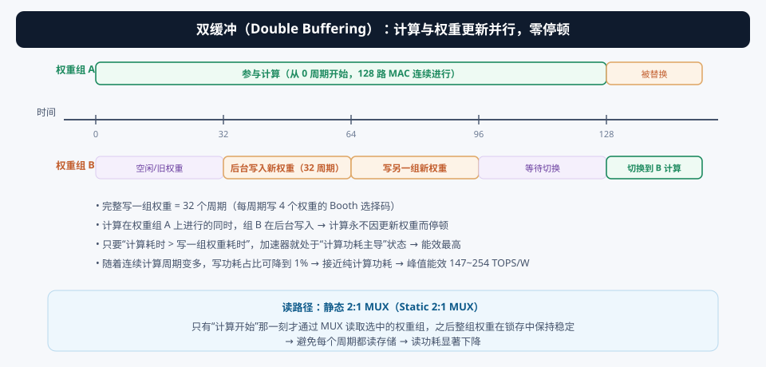
- 写一组权重要 32 个周期：每周期写 4 个权重的 Booth 选择码（128 权重 ÷ 32 周期 = 4 权重/周期）；
- 计算不中断：计算只在“选中的那一组”上进行，另一组随便写；
- 切换即选通：通过一个静态 2:1 多路选择器（Static 2:1 MUX）选当前计算组。关键在于 MUX 只在每次计算操作开始时读一次，之后整组权重在锁存里保持稳定——避免了“每个周期都读存储”的巨大读功耗；
- 当计算延迟 > 写一组权重延迟时，加速器处于计算功耗主导（compute-power bound）状态，写功耗占比可降到 1%，能效达到峰值——这正是实测 147~254 TOPS/W 出现的条件。
能效 = 吞吐 / 总功耗。总功耗 = 计算功耗 + 写功耗 + 漏电。双缓冲把“写功耗”从“阻塞计算的串行过程”里拿出来，和计算重叠（overlap）。当计算时间足够长时，摊到每次计算上的写功耗趋近于零，能效就逼近“纯计算”的上限。所以双缓冲不只是吞吐优化，更是能效优化。
§7系统架构与数据流：一个周期内，4096 个 MAC 是怎么“跑”完的
7.1 架构总览：128 进、32 出、2 组权重
把前面所有零件拼起来，就是论文 Fig. 30.9.1 的加速器组织：
- 输入侧：128 个输入通道（128 个激活），每个周期进来一组 128 个 8b 零点量化值；
- 转换级：128 个转换单元做无符号→有符号映射 + 零点偏置合并（§4.2）；
- 广播总线：转换后的 128 个有符号激活广播到全部 32 个计算列；
- 计算阵列：32 个计算列（= 32 个输出通道），每列内部：2 组权重（12T 锁存，双缓冲）→ 静态 2:1 MUX → Booth 选择器 ×128 → 4 个 bank（每 bank 32 路 MAC 的 CSA 树）→ 第 4 级求和 + 零点修正项；
- 输出侧：每列每周期输出 1 个 128 路点积结果，32 列共 32 个输出通道结果。
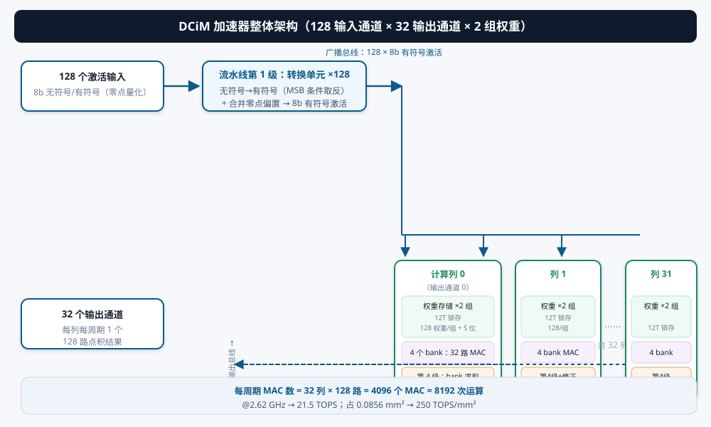
吞吐 = 每周期 MAC 数 × 频率 × 每 MAC 2 次运算
= 32 列 × 128 路 × 2.62 GHz × 2 ops
= 4096 × 2.62×10⁹ × 2 ≈ 21.5 × 10¹² ops/s = 21.5 TOPS ✓ 与论文一致。
面积效率 = 21.5 TOPS / 0.0856 mm² ≈ 251 ≈ 250 TOPS/mm² ✓。
这个“自洽性检验”是读芯片论文的基本功：任何声称的吞吐/能效/面积数字，都能用架构参数推出来对得上。
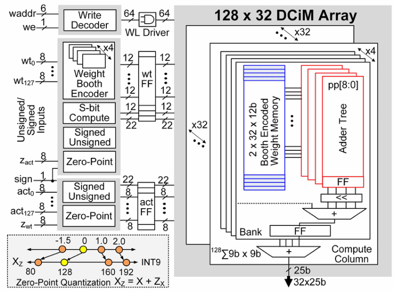
7.2 4 级流水线：128 路 MAC 怎么分四步走
论文在“吞吐与功耗的平衡”下把 128 路 MAC 拆成 4 级流水线（图 d07）：
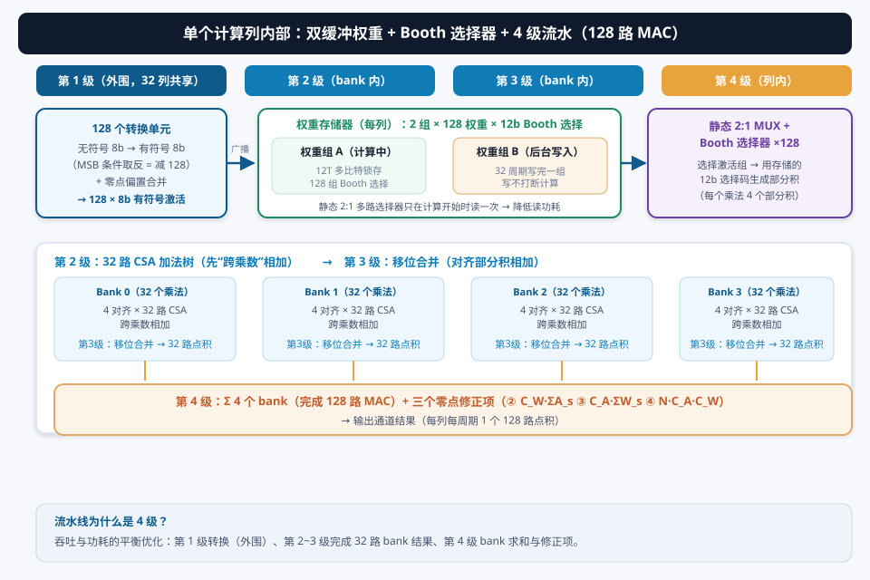
| 级 | 做什么 | 数据宽度/规模 | 位置 |
|---|---|---|---|
| 第 1 级 | 无符号→有符号转换 + 零点偏置合并（MSB 取反） | 128 个 8b 激活 | 外围（32 列共享） |
| 第 2 级 | Booth 部分积生成；每个 bank 内 32 路 CSA“先跨乘数相加”（同对齐的部分积先并） | 128 乘法 → 512 部分积 | 每个计算列内 |
| 第 3 级 | “移位合并”：把每个乘法自己的 4 个错位部分积和合并 | 每 bank 得 1 个 32 路点积 | 每个计算列内 |
| 第 4 级 | Σ 4 个 bank（凑成 128 路 MAC）+ 三个零点修正项 | 1 个点积结果 | 每个计算列内 |
为什么要“先跨乘数、后移位置换”而不是反过来？想象 32 个乘法的部分积：先按相同对齐位置把 32 个乘数相加（列方向并），再做 4 个错位的合并（行方向并）——这样 CSA 树的每一层都只处理“对齐好”的数，进位链最短、布线最规整，延迟和面积都更优。这是加法树设计的经典手法。
单看一组数据，从进入到输出要 4 个周期（延迟 latency = 4）；但流水线一旦填满，每个周期都有一组新的结果从第 4 级流出（吞吐 throughput = 1/周期）。对推理加速器来说，吞吐远比延迟重要。论文的 4 级选择是“吞吐 × 功耗”的平衡：级数太少则单级组合逻辑太长、频率上不去；级数太多则寄存器开销和流水线功耗上升。
7.3 交互演示 D：亲手“跑”一列的数据流
7.4 视频演示：完整数据流流水线
① 为什么第 2、3 级要各占一个流水级而不是合并？提示：128 个乘法 × 4 部分积 = 512 个部分积的加法树深度。② 如果输入通道扩到 256（8 个 bank），第 4 级会变成什么样？面积和延迟各增加多少？③ 双缓冲的 32 周期写入和 4 级流水线的启动延迟（4 周期）有什么关系？谁才是系统“启动”时的瓶颈？
§8面积、功耗与实测：把“纸面设计”变成“芯片成绩单”
8.1 面积/功耗分解：钱都花在哪了？
论文 Fig. 30.9.4 给出了面积与功耗的详细分解，这是理解“设计取舍”的关键证据：
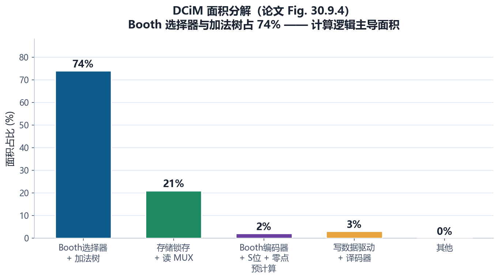
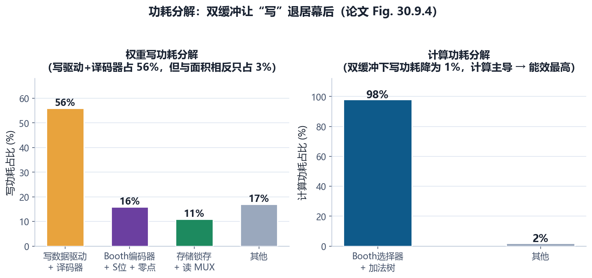
- 面积 ≠ 功耗：写驱动/译码器面积只占 3%，却吃掉 56% 的写功耗——因为写操作要驱动整列的大电容（锁存写入线、译码树）。这正是论文把写路径功耗“藏进后台”（双缓冲）的原因；
- 计算逻辑既是面积大头也是功耗大头（74% 面积 / 98% 计算功耗）——所以任何能减少部分积数量/宽度的技巧（§4、§5）都能同时撬动面积和功耗两块收益；
- Booth 编码器只占 2% 面积——因为它“只写一次”（在写权重路径上），32 列共享，面积被充分摊薄。这是 §5.2 决策的直接证据。
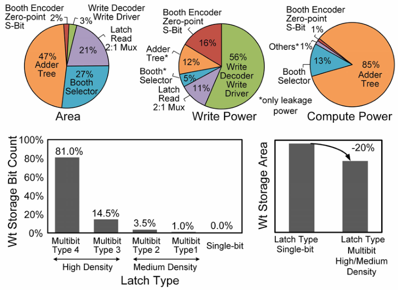
8.2 测量结果：从 1.1 V 到 400 mV
论文在 Intel 18A 上流片并实测，关键数字如下（全部为 25°C 实测）：
| 电源电压 | 频率 | 吞吐 | 功耗 | 能效 | 备注 |
|---|---|---|---|---|---|
| 1.1 V（峰值） | 2.62 GHz | 21.5 TOPS | 1.23 W | ~17.5 TOPS/W | 峰值面积效率 250 TOPS/mm² |
| 400 mV（低压） | 显著降频 | ~0.89 TOPS | 6.1 mW | 147 TOPS/W | 25% 输入活动率 → 峰值能效 |
| 400 mV | 同左 | ~0.89 TOPS | 3.5 mW | 254 TOPS/W | 10% 输入活动率 → 能效扩展 |
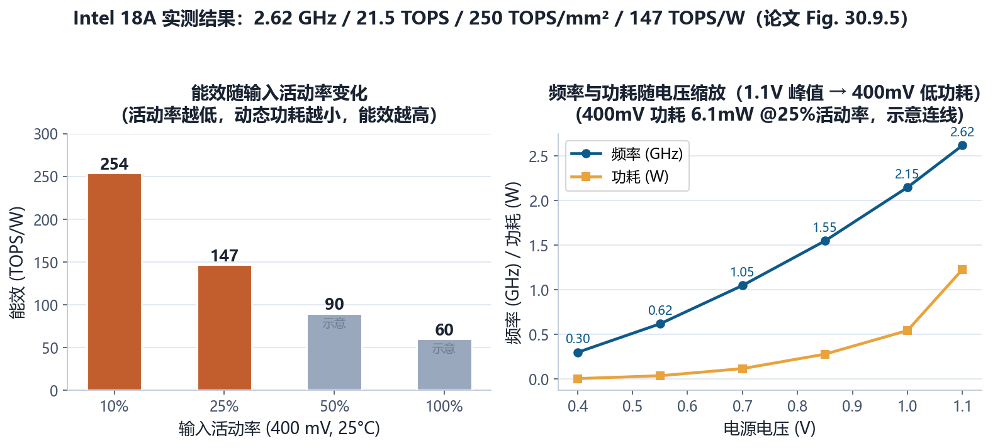
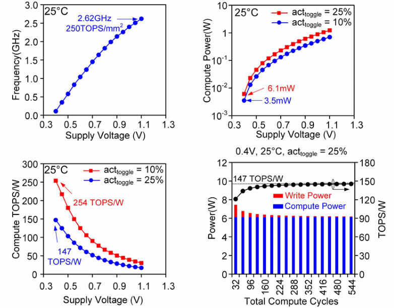
CMOS 动态功耗 ∝ C·V²·f。把电压从 1.1 V 降到 400 mV，功耗按 V² 暴跌（(0.4/1.1)² ≈ 0.13），而频率只按 ~线性下降。所以“能效 = 吞吐/功耗”在低压下急剧上升。代价是吞吐变低——所以 1.1 V 用来冲峰值吞吐，400 mV 用来冲峰值能效，这是 DVFS（动态电压频率缩放）在 DCiM 上的应用。注意“活动率”也影响功耗：数据翻转越少，动态功耗越低，能效越高（10% 活动率 → 254 TOPS/W）。
8.3 与近期工作的对比
论文 Fig. 30.9.6 把本工作与近年数字 CiM 做了对比，并声称在面积效率与能效上取得 best-in-class。以下是论文引用/可比的代表性工作（注意：不同工作位宽与归一化方式不同，直接对比要小心——这本身就是很好的研究素养提醒）：
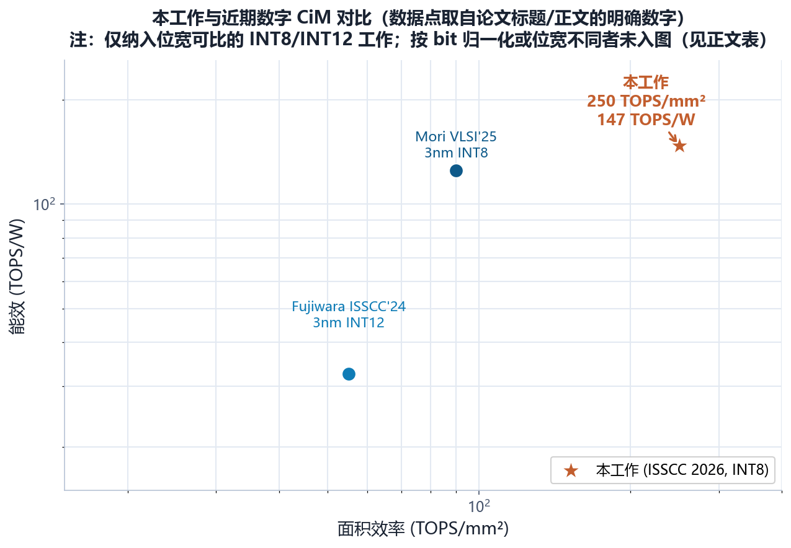
| 工作 | 工艺 | 精度 | 能效 | 面积效率 | 特点 |
|---|---|---|---|---|---|
| 本论文 | Intel 18A | INT8×INT8 | 147 TOPS/W | 250 TOPS/mm² | 全可综合、零点量化、双缓冲 |
| Mori 等 [5], VLSI'25 | 3nm | INT8 / FP16 | 125 TOPS/W | 90 TOPS/mm² | DCiM 编译器、多权重更新/周期 |
| Fujiwara 等 [4], ISSCC'24 | 3nm | INT12×INT12 | 32.5 TOPS/W | 55 TOPS/mm² | 并行 MAC 架构、foundry 6T SRAM 位单元 |
| Desoli 等 [3], ISSCC'23 | FD-SOI 18nm | ≤4b | 40–310 TOPS/W | — | 多 tile 全数字 CiM |
| Mori 等 [2], ISSCC'23 | 4nm | 位宽可配 | 6163 TOPS/W/b* | 4790 TOPS/mm²/b* | 按 bit 归一化的指标（*直接与 8b 工作不可比） |
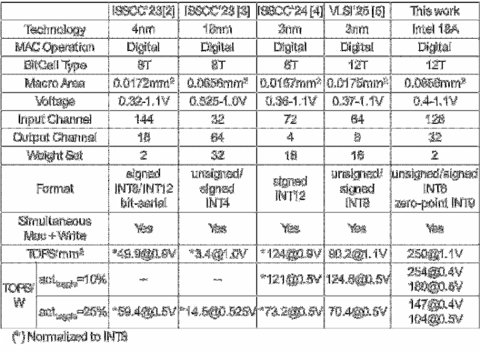
① 有些论文按“每 bit 归一化”报指标（如 6163 TOPS/W/b），位宽越低指标越好看——和 8b 工作比之前必须先换算；② 能效强烈依赖电压与活动率条件（本文 147 是 400 mV/25% 活动率），不同条件下测的数字不能直接比；③ 工艺代差（18A vs 3nm vs 28nm）也会造成不公平对比。这些“坑”恰恰是审稿人最爱问的问题，也是你自己写论文时要交代清楚的。
8.4 工艺背景：Intel 18A 是什么？
本论文在 Intel 18A 上流片。18A 是 Intel 先进节点（对标台积电 2nm 级别），两个标志性技术：
- RibbonFET（GAA 全环绕栅极）：用纳米带（nanoribbon）四面环绕的栅极替代 FinFET 的三面鳍式栅极，沟道控制更强、漏电更低——这是低压运行（400 mV）能成立的关键工艺支撑；
- PowerVia（背面供电）：电源从晶圆背面接入，正面信号布线资源不再被电源线挤占，单元密度和布线质量提升。
可综合设计（§2.2）让 DCiM 能快速跟上工艺换代；而 GAA/背面供电这类先进工艺让“低压数字逻辑”（§2.1）成为现实。两者结合，才有了 400 mV 下 147 TOPS/W 的成绩。做 CIM 研究时，工艺选择和架构选择从来不是独立的——这是论文最后一张图（Fig. 30.9.7，芯片照片）想传达的完整故事。
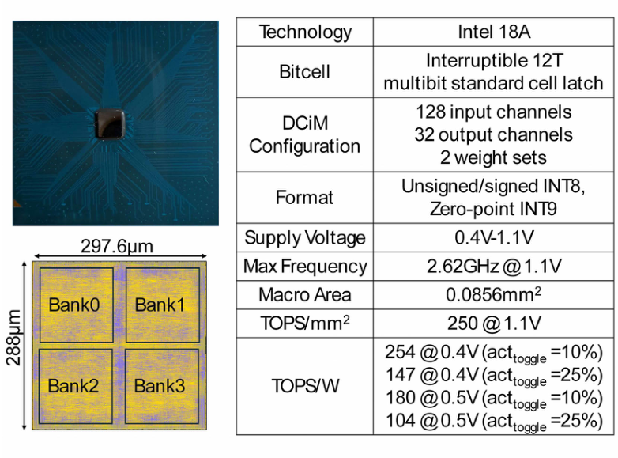
§9自测 · 未来方向 · 术语表 · 参考资料
9.1 思考题与自测（12 题）
下面的题按难度递增排列，覆盖全文核心概念。先自己做，再点“查看答案”。
9.2 未来研究方向（从这篇论文还能往哪走？）
作为初学者，读完一篇论文后最该训练的能力就是“找下一步”。基于本文，至少可以展开这些方向：
- 位宽可配置化：本文固定 INT8。把 DCiM 做成 1/2/4/8b 可配置（如 Mori 等的工作），用低比特处理“无关紧要”层、高比特处理敏感层，能在精度-能效之间自适应——这是当下 DCiM 的主战场；
- 稀疏性利用：权重/激活有很多 0，Booth 编码后“×0”的部分积可以跳过。把稀疏检测（如激活零检测）嵌入第 1~2 级流水线，跳过零 MAC，能再拿 2~4× 能效（论文 [3] 的方向）；
- 浮点/混合精度支持：INT8 是下限，LLM 常用 FP16/BF16/块浮点（MXFP 等）。可综合数字框架天然适合扩展浮点（对齐、指数处理），本论文集里 06、19 号论文就是浮点方向；
- 训练（Training）支持：本文只做推理。数字 CiM 的确定性精度其实有利于训练/微调（可复现梯度），但要解决权重频繁更新（写带宽）与反向传播的数据流——本论文集里 03、17 号论文在做浮点训练/微调；
- 更大规模与 3D 集成：单宏 0.0856 mm² 只是“积木”。把它 tile 化、互联成多宏系统（本论文集 08 号论文是 3D DRAM+logic 路线），并研究数据在 tile 间的调度；
- 编译器与软件栈：论文提到“编译器”（[5] 是 DCiM 编译器）。把量化方案（零点选择）、权重编码（Booth 选择码生成）、双缓冲调度封装成编译工具链，让用户从 PyTorch 模型直接得到可运行的 DCiM 配置——这决定了 DCiM 能否被产业采用；
- 更激进的能效工程：近阈值/亚阈值运行（往 300 mV 以下走）、时钟门控与电源门控细化、活动率感知的动态电压调节（把“活动率 → 能效”曲线变成运行时策略）；
- 可靠性研究：低压下时序裕量收窄，DCiM 的“确定性”在 PVT 极端角落还成立吗？如何做在线监控与自适应频率/电压？这是从论文走向产品的必答题。
9.3 术语表
- CiM / Compute-in-Memory（存内计算）
- 把计算嵌入存储阵列的架构，消除权重搬运开销。
- DCiM / Digital CiM
- 用数字逻辑做 MAC 的 CiM，精度确定、可综合、可低压运行。
- MAC（Multiply-Accumulate）
- 乘加运算 a×w+acc，神经网络的基本运算单元；1 MAC 计 2 次运算（OPS）。
- TOPS / TOPS/W / TOPS/mm²
- 每秒万亿次运算 / 能效（每瓦每秒万亿次运算）/ 面积效率（每平方毫米每秒万亿次运算）。
- Zero-Point Quantization（零点量化）
- 非对称线性量化 r = s(q−z)，用零点 z 贴合偏态数据分布。
- Unsigned-to-Signed Mapping
- 无符号 8b 减 128（MSB 取反）映射为有符号 8b 的技巧。
- Zero-Point Expansion（零点扩展）
- 把 Σ(As+CA)(Ws+CW) 展开为 8b×8b 主项 + 三个修正项，修正项利用数据流特性廉价实现。
- Radix-4 Booth Encoding
- 每 3 位一组把乘数编码为 ±1/±2/0 选择码，部分积数量减半（8b→4 个，9b→5 个）。
- Partial Product（部分积）
- 乘法分解出的中间乘积，错位相加得到最终积。
- CSA / Carry-Save Adder（进位保存加法器）
- 三输入两输出（和+进位）的加法器，可并行叠加多个部分积，延迟与输入个数近似无关。
- Booth Selector
- 根据选择码从激活生成部分积的组合逻辑；本文用修正 single/neg/pos 编码，选择器面积 −12%。
- S-bit（符号修正位）
- 负部分积的补码修正位，本文预计算并随权重存储。
- 12T Latch（12 管锁存器）
- 标准单元库锁存器，两个交叉耦合反相器；本文用它实现“可综合的”权重存储。
- Multibit Latch（多比特锁存）
- 多位共享单元体的高密度锁存，本文 95.5% 插入率省 20% 存储面积。
- Double Buffering（双缓冲）
- 两组权重轮换：一组计算、一组后台写入，消除更新停顿。
- Static 2:1 MUX（静态二选一）
- 选择当前计算权重组的选择器，只在计算开始时读一次，省读功耗。
- Adder Tree（加法树）
- 把 N 个数并行相加的树状结构；本文 32 路 CSA 树 + 移位合并。
- Pipeline Stage（流水线级）
- 级间寄存器隔开的组合逻辑段；本文 4 级：转换 / 部分积+CSA / 移位合并 / bank 求和+修正。
- DVFS（动态电压频率缩放）
- 按负载调整电压/频率：1.1 V 冲吞吐、400 mV 冲能效。
- Input Activity（输入活动率）
- 输入数据翻转的比例，决定动态功耗；25%→147 TOPS/W、10%→254 TOPS/W。
- Intel 18A / RibbonFET / PowerVia
- Intel 先进节点（GAA 全环绕栅极 + 背面供电），支撑低压鲁棒运行。
- Deterministic Accuracy（确定性精度）
- 同样的输入永远得到同样的输出，与 PVT 无关——数字 CiM 的核心卖点。
9.4 参考资料
- A. Agarwal, S. K. Hsu, M. A. Anders, A. Raha, D. A. Mathaikutty, R. Krishnamurthy, “A 147TOPS/W, 250TOPS/mm², Fully Synthesizable, Digital Compute-in-Memory Accelerator Supporting INT8×INT8 with Zero-Point Quantization in Intel 18A Technology,” ISSCC 2026, Paper 30.9. DOI: 10.1109/ISSCC49663.2026.11409207
- H. Mori et al., “A 4nm 6163-TOPS/W/b 4790-TOPS/mm²/b SRAM Based Digital-Computing-in-Memory Macro Supporting Bit-Width Flexibility and Simultaneous MAC and Weight Update,” ISSCC 2023, pp. 132-133.
- G. Desoli et al., “A 40-310TOPS/W SRAM-Based All-Digital Up to 4b In-Memory Computing Multi-Tiled NN Accelerator in FD-SOI 18nm for Deep-Learning Edge Applications,” ISSCC 2023, pp. 260-261.
- H. Fujiwara et al., “A 3nm, 32.5TOPS/W, 55.0TOPS/mm² and 3.78Mb/mm² Fully-Digital Compute-in-Memory Macro Supporting INT12 × INT12 with a Parallel-MAC Architecture and Foundry 6T-SRAM Bit Cell,” ISSCC 2024, pp. 572-574.
- H. Mori et al., “A 3nm 125TOPS/W-29TFLOPS/W, 90TOPS/mm²-17TFLOPS/mm² SRAM-Based INT8 and FP16 Digital-CIM Compiler with Multi-Weight Update/Cycle,” IEEE Symp. VLSI Circuits, 2025.
- K. Fischer et al., “Intel 18A Platform Technology Featuring RibbonFET (GAA) and PowerVia for Advanced High-Performance Computing,” IEEE Symp. VLSI Circuits, 2025.
- Intel Foundry, “Intel 18A Process Node — Platform Brief,” intel.com（工艺背景）
- Google AI Edge, “LiteRT 8-bit Quantization Specification,” developers.google.com（零点量化公式背景）